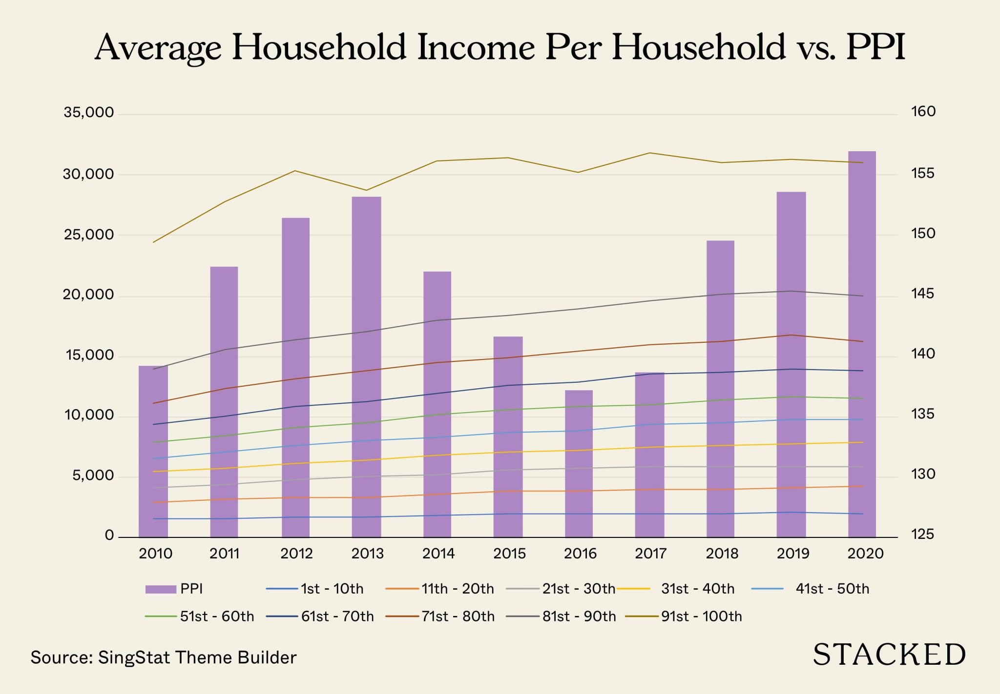
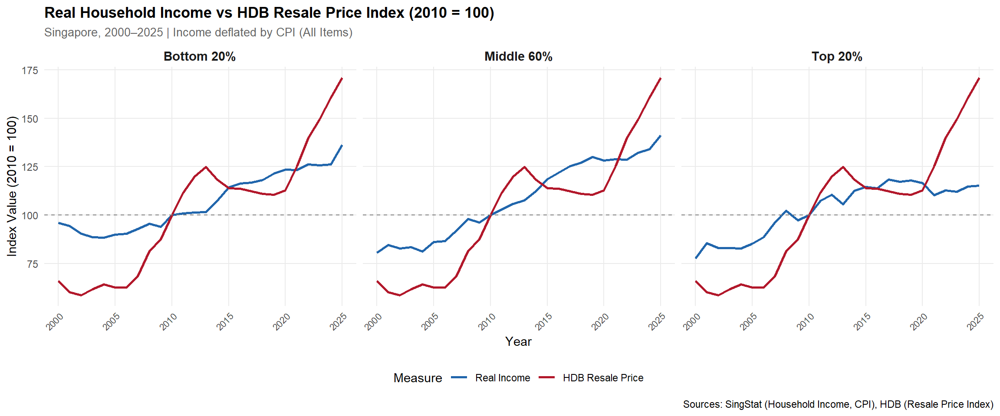
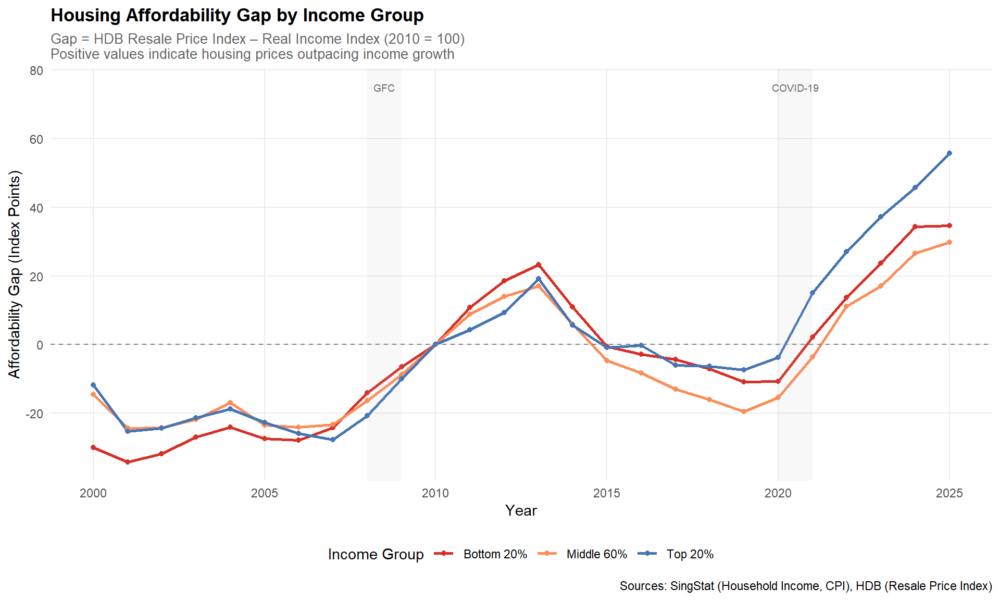

Project Proposal – Income vs Prices (Singapore, 2000–2025)
Authors
Shina Shih Xin Rong (2402781)
Jeanie Cherie Chua Yue-Ning (2403083)
Claudia Yue Xin Ying (2401817)
Nurul Zahirah Binte Muhamadnoh (2401671)
Anushka Chourasia (2503769)
Published
February 5, 2026
1 Chosen Visualization and Story
1.1 Visualization Example (Original)
The original visualization, “Average Household Income Per Household vs Purchasing Power Index (PPI)”, combines stacked bar charts representing average household income across income deciles with an overlaid Purchasing Power Index (PPI) line across time. The intention of the visualization is to compare income growth with changes in purchasing power at a national level.

Original visualization: Average Household Income vs PPI
1.2 Intended Story / Key Message
While the original visualization compares income with a general purchasing power index, it does not isolate specific cost pressures such as housing. This project refocuses the analysis on housing affordability, as housing represents the largest expenditure component for Singapore households.
The extended time horizon (2000–2025) allows examination of affordability dynamics across multiple economic cycles, including the Global Financial Crisis (2008–2009) and the COVID-19 period.
In Singapore, housing is not merely a shelter cost. It is the primary store of household wealth and the single largest financial commitment most families will make. For lower-income households, the ability to purchase an HDB resale flat is directly contingent on whether their incomes have grown fast enough to absorb rising resale prices. When housing prices outpace income growth, younger and lower-income households face longer saving horizons, higher debt burdens, and reduced intergenerational mobility. Understanding how this affordability dynamic has evolved across income groups, and whether gaps have widened or narrowed, carries direct policy relevance for housing grant design, CPF policy, and income support programmes.
The refined research question guiding this project is:
Did real income growth for lower-income households keep pace with housing price growth between 2000 and 2025, and have affordability gaps widened across income groups over time?
Preliminary inspection suggests a general upward trend across most income deciles between 2000 and the latest available year, with a temporary decline during the COVID-19 period around 2020.
2 Strengths and Weaknesses of the Original Visualization
2.1 Strengths
Provides a clear high-level comparison between income growth and purchasing power.
Time-series structure allows identification of long-term trends and periods of divergence.
Familiar and accessible chart design suitable for non-technical audiences.
Inclusion of income deciles acknowledges income heterogeneity across households.
2.2 Weaknesses
The dual-axis design actively distorts perception by visually aligning independently scaled variables, which can falsely suggest correlation and exaggerate the apparent relationship between income and PPI.
Displaying ten income deciles simultaneously creates visual congestion and increases cognitive load, reducing interpretability.
The chart presents nominal income values without adjusting for inflation, limiting meaningful purchasing power comparison.
There is no explicit affordability metric linking income growth to specific cost pressures such as housing.
The aggregated Purchasing Power Index does not reveal distributional affordability differences across income groups.
The legend is overly dense, requiring excessive visual cross-referencing and weakening narrative clarity.
3 Proposed Improvements and Justifications
The proposed improvements directly address the perceptual distortions, lack of inflation adjustment, and absence of affordability metrics identified in the original visualization.
3.1 Reduce the Number of Income Groups Displayed
Income groups will be aggregated into broader categories (Bottom 20%, Middle 60%, Top 20%) to reduce cognitive load and improve interpretability.
3.2 Improve Comparison Between Income and Prices
The stacked bar chart will be replaced with a faceted line chart to enable clearer comparison of income and housing price trends across income groups.
3.3 Incorporate Purchasing Power (Real Income)
Household income will be deflated using CPI to derive real income series, ensuring inflation-adjusted comparability across time.
3.4 Improve Visual Hierarchy and Narrative
Clear titles, consistent scales, and annotations will be used to guide interpretation and highlight divergence in affordability trends.
4 Data Sources
The datasets used in this project are obtained from official Singapore government sources to ensure reliability, consistency, and relevance.
4.1 Household Income by Income Decile
Source: Department of Statistics Singapore (SingStat)
Dataset: Average Monthly Household Income by Income Decile
Justification: This dataset provides a disaggregated view of household income across income deciles, which is essential for analysing distributional differences in affordability outcomes.
4.2 Consumer Price Index (CPI – All Items)
Source: Department of Statistics Singapore (SingStat)
Justification: CPI is used to adjust nominal household income into real terms, allowing purchasing power and affordability trends to be analysed more accurately over time.
Justification: The HDB resale price index is used as a proxy for housing costs, which represent the largest expenditure component for most Singapore households.
4.4 Optional / Contextual Datasets
The following datasets were explored for contextual understanding but are not used in the final visualization:
Raw datasets are downloaded from official sources and aligned to a common annual time range (2000–2025), subject to latest available release year.
The following tables show the original data as loaded from each source file.
5.1.1 Original Data: Household Income by Decile (Nominal SGD)
# Source: SingStat Table CT/17880# The CSV has 10 metadata/header rows to skip.# Row 11 (index 0 after skip) = column headers: Deciles1/, 2025, 2024, ..., 2000# Rows 12–23 = Total + 10 decile rows# Years run in descending order across columns.income_raw_wide <-read_csv("data/Singstat_AvgMonthlyHouseholdEmploymentIncome.csv",skip =10,n_max =12,col_names =FALSE,show_col_types =FALSE)# Define years FIRSTyears <-as.character(2025:2000)# Then rename columnscolnames(income_raw_wide) <-c("Decile", years, "drop")income_raw_wide <- income_raw_wide %>%select(-drop)kable(head(income_raw_wide[, 1:10], 6))# Assign column names: first col = Decile label, then years 2025 down to 2000, then trailing comma colyears <-as.character(2025:2000)# Clean decile labels and remove the Total rowincome_raw_wide <- income_raw_wide %>%mutate(Decile =str_trim(Decile)) %>%filter(Decile !="Total", Decile !="Deciles1/")# Pivot to long formatincome_raw <- income_raw_wide %>%pivot_longer(cols =-Decile, names_to ="Year", values_to ="Income") %>%mutate(Year =as.integer(Year),Income =as.numeric(Income) ) %>%filter(Year >=2000, Year <=2025)# Display in wide format (years as columns) for readabilityincome_display <- income_raw %>%pivot_wider(names_from = Decile, values_from = Income) %>%arrange(Year)kable(income_display)
Table 1: Raw Data – Average Monthly Household Employment Income (Including Employer CPF) by Deciles (SGD)
Decile
2025
2024
2023
2022
2021
2020
2019
2018
2017
Deciles1/
2025
2024
2023
2022
2021
2020
2019
2018
2017
Total
15205
14570
13986
13152
12301
12258
12411
12161
12051
1st (Lowest)
2685
2434
2338
2317
2042
1978
2047
1956
1938
2nd
5446
5032
4921
4626
4359
4292
4116
4009
3934
3rd
7736
7159
7020
6393
5847
5853
5913
5846
5818
4th
10104
9632
9323
8454
8141
7841
7796
7644
7422
Year
1st (Lowest)
2nd
3rd
4th
5th
6th
7th
8th
9th
10th (Highest)
2000
1382
2241
2987
3685
4506
5308
6354
7616
9461
15952
2001
1331
2276
3045
3867
4687
5672
6764
8329
10760
17473
2002
1265
2180
2947
3722
4581
5522
6674
8139
10306
17006
2003
1223
2165
2983
3749
4644
5645
6728
8246
10270
17161
2004
1232
2198
2990
3792
4647
5519
6640
8011
10367
17502
2005
1257
2256
3118
4022
4863
5873
7146
8647
10719
18086
2006
1260
2306
3180
4037
4985
6026
7191
8815
11077
19104
2007
1322
2417
3379
4336
5367
6565
7935
9499
12403
21155
2008
1401
2697
3831
4915
6059
7499
8975
10835
14016
23986
2009
1362
2695
3791
4976
5992
7327
8801
10704
13439
22928
2010
1498
2942
4160
5405
6624
7854
9317
11127
13953
24454
2011
1583
3133
4423
5800
7040
8445
10097
12335
15549
27863
2012
1644
3305
4788
6184
7608
9139
10912
13219
16376
30388
2013
1711
3371
5000
6379
7998
9482
11304
13831
17011
28701
2014
1776
3643
5229
6869
8304
10109
11893
14505
18031
31173
2015
1926
3823
5595
7075
8723
10676
12658
14940
18433
31396
2016
1910
3911
5689
7295
8894
10892
12887
15401
19020
30211
2017
1938
3934
5818
7422
9348
11001
13535
16023
19632
31855
2018
1956
4009
5846
7644
9522
11468
13664
16217
20256
31025
2019
2047
4116
5913
7796
9825
11747
13942
16920
20475
31326
2020
1978
4292
5853
7841
9808
11508
13907
16278
20043
31076
2021
2042
4359
5847
8141
10046
12138
14233
16679
20603
28922
2022
2317
4626
6393
8454
10541
12587
15023
17922
22175
31486
2023
2338
4921
7020
9323
11219
13669
15968
19372
23133
32896
2024
2434
5032
7159
9632
11493
14249
16927
19974
24285
34511
2025
2685
5446
7736
10104
12635
15141
17823
20985
24893
34601
5.1.2 Original Data: Consumer Price Index (CPI – All Items)
# Source: SingStat - CPI (2024 as Base Year), Monthly# Format: Row 1 = headers (DataSeries, 2026Jan, 2025Dec, ..., 1961Jan)# Row 2 = "All Items" row with monthly index values# We extract the "All Items" row and compute annual averages.cpi_monthly_raw <-read_csv("data/ConsumerPriceIndexCPI2024AsBaseYearMonthly.csv",col_types =cols(.default =col_character()))kable(head(cpi_monthly_raw[, 1:10], 6))# Extract the "All Items" row and pivot to long formatcpi_all_items <- cpi_monthly_raw %>%filter(DataSeries =="All Items") %>%pivot_longer(cols =-DataSeries, names_to ="Month_Year", values_to ="CPI") %>%mutate(CPI =as.numeric(CPI),Year =as.integer(str_extract(Month_Year, "\\d{4}")) ) %>%filter(Year >=2000, Year <=2025, !is.na(CPI))# Compute annual average CPIcpi_annual <- cpi_all_items %>%group_by(Year) %>%summarise(CPI_2024base =round(mean(CPI), 2), .groups ="drop") %>%arrange(Year)kable(cpi_annual, col.names =c("Year", "CPI (2024 = 100)"))
Table 2: Raw Data – Consumer Price Index, All Items (2024 = 100), Annual Average
DataSeries
2026Jan
2025Dec
2025Nov
2025Oct
2025Sep
2025Aug
2025Jul
2025Jun
2025May
All Items
101.333
101.854
101.579
101.33
101.32
100.963
100.447
100.9
100.978
Food Hampers, Incl Fruits
95.799
95.799
95.799
95.799
95.799
95.799
95.799
95.799
95.799
Food
102.042
101.79
101.678
101.617
101.307
101.137
101.05
100.865
100.925
Diagnostic Imaging Services & Medical Laboratory Services
102.652
102.652
102.51
102.509
102.27
102.19
102.063
102.037
101.714
Food Excl Food & Beverage Serving Services
102.216
101.673
101.544
101.502
100.919
100.78
100.721
100.384
100.593
Rice & Cereal Products
102.263
101.793
102.196
101.893
101.176
100.998
101.505
101.366
101.77
Year
CPI (2024 = 100)
2000
63.94
2001
64.59
2002
64.34
2003
64.65
2004
65.73
2005
66.04
2006
66.68
2007
68.09
2008
72.61
2009
73.03
2010
75.10
2011
79.04
2012
82.66
2013
84.62
2014
85.49
2015
85.05
2016
84.60
2017
85.08
2018
85.46
2019
85.94
2020
85.79
2021
87.78
2022
93.16
2023
97.67
2024
100.00
2025
100.90
5.1.3 Original Data: HDB Resale Price Index
# Source: data.gov.sg / HDB# Format: quarter (e.g. "2000-Q1"), index (numeric)# We compute annual averages from quarterly data.hdb_rpi_quarterly <-read_csv("data/HDBResalePriceIndex1Q2009100Quarterly.csv",show_col_types =FALSE)kable(head(hdb_rpi_quarterly, 6))# Compute annual average from quarterly valueshdb_rpi_annual <- hdb_rpi_quarterly %>%mutate(Year =as.integer(str_extract(quarter, "\\d{4}"))) %>%filter(Year >=2000, Year <=2025) %>%group_by(Year) %>%summarise(HDB_RPI =round(mean(index), 1), .groups ="drop") %>%arrange(Year)kable(hdb_rpi_annual, col.names =c("Year", "HDB Resale Price Index (1Q2009 = 100)"))
Table 3: Raw Data – HDB Resale Price Index (1Q2009 = 100), Annual Average
quarter
index
1990-Q1
24.3
1990-Q2
24.4
1990-Q3
25.0
1990-Q4
24.7
1991-Q1
24.9
1991-Q2
25.5
Year
HDB Resale Price Index (1Q2009 = 100)
2000
78.2
2001
71.4
2002
69.5
2003
73.2
2004
76.2
2005
74.3
2006
74.2
2007
81.3
2008
96.7
2009
103.8
2010
118.6
2011
132.5
2012
142.2
2013
148.0
2014
140.3
2015
135.0
2016
134.7
2017
133.2
2018
131.6
2019
131.1
2020
133.8
2021
148.7
2022
165.8
2023
177.2
2024
190.6
2025
202.8
5.2 Data Cleaning and Standardisation
Data is inspected for missing values and inconsistencies. Time variables and income group labels are standardised, and irrelevant fields are removed.
5.3 Data Transformation and Aggregation
All monetary values will be adjusted to real 2010 dollars using CPI deflation before index construction.
Missing years, if any, will be handled via linear interpolation only if gaps are ≤ 1 year; otherwise omitted with justification.
Nominal income values will be converted into real income terms using CPI (All Items) as a deflator:
Real Income = Nominal Income ÷ (CPI / 100)(where CPI has been rebased to 2010 = 100)
Indexed Value = (Real Income ÷ Real Income_2010) × 100
Where CPI base year differences exist, rebasing will be performed to ensure consistent index alignment across datasets.
Income and housing price series are converted into normalised indices, rebased to 2010 = 100 for consistent long-term comparison.
5.3.1 Step 1: Aggregate Deciles into Income Groups
The ten income deciles are aggregated into three broader categories to reduce visual complexity:
Table 6: Real Household Income by Income Group (Constant 2010 SGD)
Year
Bottom 20% (Nominal)
Bottom 20% (Real)
Middle 60% (Nominal)
Middle 60% (Real)
Top 20% (Nominal)
Top 20% (Real)
2000
1811.5
2129
5076.000
5965
12706.5
14931
2001
1803.5
2097
5394.000
6272
14116.5
16415
2002
1722.5
2010
5264.167
6143
13656.0
15935
2003
1694.0
1967
5332.500
6193
13715.5
15930
2004
1715.0
1960
5266.500
6019
13934.5
15925
2005
1756.5
1998
5611.500
6384
14402.5
16385
2006
1783.0
2008
5705.667
6425
15090.5
16994
2007
1869.5
2061
6180.167
6814
16779.0
18499
2008
2049.0
2119
7019.000
7259
19001.0
19649
2009
2028.5
2087
6931.833
7132
18183.5
18707
5.3.4 Step 4: Index All Series to 2010 = 100
Both real income and the HDB Resale Price Index are converted into normalised indices with 2010 as the base year (= 100), enabling direct comparison of growth rates.
# A tibble: 1 × 3
Year HDB_RPI `HDB Index (2010 = 100)`
<int> <dbl> <dbl>
1 2010 119. 100
# 2. Check for missing valuesany(is.na(income_indexed))
[1] FALSE
any(is.na(hdb_indexed))
[1] FALSE
# 3. Confirm row countsnrow(income_indexed)
[1] 26
nrow(hdb_indexed)
[1] 26
All income and housing indices equal 100 in 2010, confirming correct rebasing.
No missing values were introduced during transformation or joins.
Row counts confirm full year coverage from 2000–2025.
Merged datasets are validated to ensure accurate alignment across time and income groups, with checks for duplication or data loss.
5.5 Final Tidy Dataset
The final dataset is reshaped into long format with variables: Year, Income Group, Measure Type, and Index Value, suitable for faceted line chart visualisation.
Using the final tidy dataset, two exploratory visualisations are produced to preview the intended analytical output.
5.6.1 Indexed Comparison (Faceted Line Chart)
tidy_data <- tidy_data %>%mutate(Income_Group =factor(Income_Group, levels =c("Bottom 20%", "Middle 60%", "Top 20%")),Measure_Type =factor(Measure_Type, levels =c("Real Income", "HDB Resale Price")) )ggplot(tidy_data, aes(x = Year, y = Index_Value, color = Measure_Type)) +geom_line(linewidth =1) +geom_hline(yintercept =100, linetype ="dashed", color ="grey50", linewidth =0.4) +facet_wrap(~Income_Group, ncol =3) +scale_color_manual(values =c("Real Income"="#2166AC", "HDB Resale Price"="#B2182B")) +scale_x_continuous(breaks =seq(2000, 2025, by =5)) +labs(title ="Real Household Income vs HDB Resale Price Index (2010 = 100)",subtitle ="Singapore, 2000–2025 | Income deflated by CPI (All Items)",x ="Year", y ="Index Value (2010 = 100)",color ="Measure",caption ="Sources: SingStat (Household Income, CPI), HDB (Resale Price Index)" ) +theme_minimal(base_size =11) +theme(legend.position ="bottom",strip.text =element_text(face ="bold", size =11),plot.title =element_text(face ="bold", size =13),plot.subtitle =element_text(size =10, color ="grey40"),panel.grid.minor =element_blank(),axis.text.x =element_text(angle =45, hjust =1, size =8) )

Figure 1: Real Household Income vs HDB Resale Price Index (2010 = 100)
The faceted line chart reveals that prior to 2010, all three income groups had real income indices running broadly in line with or above the HDB resale price index, suggesting relative affordability stability in the early 2000s. Post-2010, the HDB Resale Price Index diverges sharply upward, by 2025, it reaches 171.0 compared to 136.3, 141.2, and 115.3 for Bottom 20%, Middle 60%, and Top 20% real income respectively. Notably, the Top 20% panel shows the widest gap in absolute terms by 2025, which appears counterintuitive but reflects that high-income nominal growth was partly offset by CPI deflation, while resale prices continued to rise. The Bottom 20% panel shows the most concerning trajectory, real income growth has lagged behind HDB price growth since approximately 2021, coinciding with the post-COVID resale market surge.
5.6.2 Affordability Gap by Income Group
gap_data <- tidy_data %>%pivot_wider(names_from = Measure_Type, values_from = Index_Value) %>%mutate(Affordability_Gap =`HDB Resale Price`-`Real Income`)ggplot(gap_data, aes(x = Year, y = Affordability_Gap, color = Income_Group)) +geom_line(linewidth =1) +geom_point(size =1.5) +geom_hline(yintercept =0, linetype ="dashed", color ="grey50") +scale_color_manual(values =c("Bottom 20%"="#D73027", "Middle 60%"="#FC8D59", "Top 20%"="#4575B4")) +scale_x_continuous(breaks =seq(2000, 2025, by =5)) +annotate("rect", xmin =2008, xmax =2009, ymin =-Inf, ymax =Inf, alpha =0.1, fill ="grey") +annotate("text", x =2008.5, y =75, label ="GFC", size =2.5, color ="grey40") +annotate("rect", xmin =2020, xmax =2021, ymin =-Inf, ymax =Inf, alpha =0.1, fill ="grey") +annotate("text", x =2020.5, y =75, label ="COVID-19", size =2.5, color ="grey40") +labs(title ="Housing Affordability Gap by Income Group",subtitle ="Gap = HDB Resale Price Index – Real Income Index (2010 = 100)\nPositive values indicate housing prices outpacing income growth",x ="Year", y ="Affordability Gap (Index Points)",color ="Income Group",caption ="Sources: SingStat (Household Income, CPI), HDB (Resale Price Index)" ) +theme_minimal(base_size =11) +theme(legend.position ="bottom",plot.title =element_text(face ="bold", size =13),plot.subtitle =element_text(size =10, color ="grey40"),panel.grid.minor =element_blank() )

Figure 2: Housing Affordability Gap by Income Group
Figure 2 quantifies the affordability gap as the difference between the HDB Resale Price Index and the Real Income Index (both rebased to 2010 = 100). Before 2010, all three income groups show negative or near-zero gaps, meaning income growth was keeping pace with or outpacing housing prices. From 2010 onward, the gap turns persistently positive for all groups. The sharpest deterioration occurs post-2020: by 2025, the Bottom 20% faces a gap of 34.7 index points (171.0 − 136.3), the Middle 60% faces 29.8 points (171.0 − 141.2), while the Top 20% faces the largest gap at 55.7 points (171.0 − 115.3). It is important to note that a larger index gap does not necessarily imply greater financial stress, the Top 20% retain substantially higher absolute incomes and greater access to financing, making this gap an indicator of relative price growth divergence rather than housing distress. The Top 20% result warrants careful interpretation, their real income growth has plateaued since around 2013, suggesting that upper-income households are not immune to affordability pressure, particularly when purchasing larger or more central resale units. The GFC shaded region (2008–2009) shows a temporary compression of gaps as housing prices dipped, while the COVID-19 period (2020–2021) marks the inflection point after which all gaps widen dramatically.
The resulting dataset contains four primary analytical dimensions:
Year (time dimension),
Income Group (distributional dimension),
Measure Type (Real Income vs Housing Price),
Indexed Value (quantitative measure).
This multidimensional structure enables comparative layering and faceted visualization while maintaining analytical clarity.
6 Planned Data Analysis
The following analytical methods will be applied to support and extend the visualization findings:
1. Compound Annual Growth Rate (CAGR) Comparison CAGR will be computed for real income and HDB resale prices across three sub-periods, 2000–2010 (pre-financial crisis to base year), 2010–2020 (post-GFC expansion), and 2020–2025 (COVID-19 and post-pandemic surge), for each income group. This allows structured identification of periods where housing price growth structurally outpaced income growth, and whether this divergence is accelerating.
2. Affordability Gap Index An affordability gap index (HDB Resale Price Index − Real Income Index) will be computed annually for each income group. A positive and widening gap indicates worsening affordability. This metric directly addresses the research question and will be annotated on the final visualization.
3. Price-to-Income Ratio (Supplementary Metric) A supplementary price-to-income ratio will be computed as nominal HDB Resale Price Index divided by nominal household income index (not deflated), to provide an alternative affordability lens that is more familiar to general audiences and policymakers. This will be included as a supporting annotation or table alongside the main visualization.
These methods are intentionally kept within descriptive and comparative analysis, consistent with the module’s scope, while providing sufficient analytical depth to generate meaningful and defensible insights.
7 Limitations
This analysis carries several limitations that affect the interpretation of findings. First, CPI (All Items) is used to deflate nominal income into real terms. Since housing constitutes a proportionally larger share of expenditure for lower-income households, using a general price index likely understates the real cost burden on the Bottom 20%, meaning the affordability gap presented here is conservative, true purchasing power erosion for lower-income groups may be worse than depicted. Second, the HDB Resale Price Index reflects transaction prices but does not incorporate mortgage interest rates or total debt servicing obligations. During periods of rising interest rates (e.g., 2022–2024), actual affordability deteriorated faster than the index alone suggests, as monthly repayments increased even when prices stabilised. Third, household income data captures gross employment income including employer CPF contributions, which are not directly spendable, using gross income overstates the disposable income available for housing payments, introducing an upward bias in income figures. Fourth, index rebasing to 2010 = 100 improves growth rate comparability but obscures absolute level differences: a household earning $1,800 and one earning $19,000 both index to 100 in 2010, which may mask the structural advantages higher-income groups hold in accessing financing, grants, or larger flats.
8 Planned Work Distribution
Team Member
Responsibilities
Shina Shih Xin Rong
Project coordination, narrative development, Quarto assembly
Jeanie Cherie Chua Yue-Ning
Data collection and raw data ingestion
Claudia Yue Xin Ying
Data transformation and index construction
Nurul Zahirah Binte Muhamadnoh
Visualization design and preliminary charts
Anushka Chourasia
Data validation, quality checks, and analysis support
9 Appendix: Alternative Design Concepts
The following visual mockups are AI-generated conceptual charts created to illustrate potential visualization structures. These charts do not represent actual project data and are included solely to demonstrate design direction considered during the proposal stage.
9.1 Concept A: Small Multiples Line Chart (By Income Group)
Concept A: Small Multiples Layout
This design separates income groups (Bottom 20%, Middle 60%, Top 20%) into individual panels with consistent y-axis scales.
Why not selected as primary design: - Requires more vertical space - Cross-group comparison less immediate
Note: The preliminary visualization in Section 5.6 adopts a faceted layout structurally similar to Concept A. This was done intentionally for exploratory purposes, the faceted approach serves as the data engineering preview, while the final improved visualization will integrate the indexed comparison approach from Concept C with design refinements not possible at the proposal stage.
9.2 Concept B: Income–Housing Gap Area Chart
Concept B: Gap Area Visualization
This design shades the difference between real income index and housing price index to highlight affordability gaps.
Indexed comparison removes nominal scale distortion and eliminates the dual-axis bias present in the original design. By converting income and housing series into normalised indices rebased to 2010 = 100, all variables share a common baseline, enabling direct growth comparison without perceptual manipulation.
Why preferred: - Standard economic practice - Removes scale distortion - Clean and professional - Supports analytical interpretation